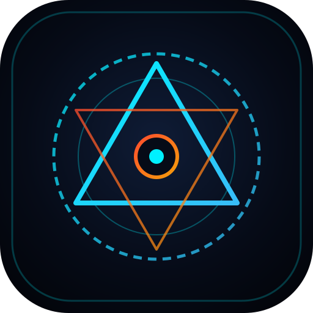

Caption para Redes (Editable)
Arte: Oráculo Visual🌐 Inspiración Web en Vivo
Consultando al Oráculo...
Historial Reciente (Últimas 5)
Tus últimas 5 invocaciones se guardarán automáticamente aquí.

Calculando vibración diaria...
🌐 Inspiración Web en Vivo
Consultando al Oráculo...
Tus últimas 5 invocaciones se guardarán automáticamente aquí.
Tus credenciales se guardan solo en tu navegador.
Usa gemini-3.8-flash (con autodescubrimiento de modelo activo) y arte adaptativo.
Escanea con la cámara de tu móvil para abrir e instalar la app.
Android (Chrome): Escanea el QR, abre el enlace y toca "Instalar app" o menú ⋮ → Agregar a pantalla principal.
iPhone (Safari): Escanea el QR, toca el botón Compartir ⬆️ y elige "Agregar a inicio".